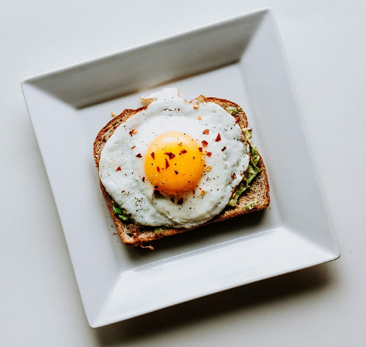

Basted Eggs Recipe

Ingredients
- 1 tablespoon of butter
- 2 eggs
- 1 tablespoon water
- pinch of black pepper
- pinch of salt
How to make
- Melt the butter in a nonstick pan over medium heat. Crack the eggs into the pan and let them cook until whites have almost set.
- Add water, cover the pan with a lid and reduce the heat to medium-low.
- Let the eggs cook until whites have set, yolks are still runny, and some of white has set over yolk. Remove the lid from the pan and move the eggs to a plate. Add pepper and salt.